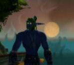

Gardhran
Points : 4

Joué par :
Gardhran
Joué par :
[ Information masquée ]
Age : Encore jeune
Lieu de naisance : Ashenvale
Sexe : Homme
Race : Elfe
Faction : Alliance
Formation : Druide
Niveau : 60
Guilde :
Clan LunArgentArtisanat 1 : Alchimiste
Artisanat 2 : Mineur
Informations hrp : Gardhran est ce qu'on peut appeller un diplomate; s'il deteste une chose, ce sont les morts inutiles, et c'est pour ça qu'il tente de reunifier la horde et l'alliance.
Tres enjoué, toujours a sourire (j'en ai fait un macro ><), il s'enerve cependant rapidement face a ce qu'il juge etre de la stupidité, bien que cela soit sous la forme d'une froide colere.
C'est un personnage que j'aime a jouer, donc, je le joue souvent ^^, c'est a dire quatre a cinq soirs par semaine, plutot en soirée donc, mais de temps a autre on peut l'apercevoir le jour.
Description : Le vieux barde s'installa confortablement sur son siège, puis, jetant un regard circulaire à la salle de la taverne, il toussota, et commença a parler d'une voie emplie de sagesse.
« Beaucoup connaissent Gardhran, l'ancien Prince du Clan Moonblade, et son histoire au sein du clan, depuis son entrée jusqu'a sa triste chute, n'est un mystère pour personne. Cependant, une grande partie de sa vie est inconnue de tous, et c'est celle que je vais tenter de vous raconter aujourd'hui. »
Gardhran est né voici de nombreuses années, au temps ou les elfes jouissaient encore de la paisible existence de ceux qui possèdent la vie éternelle. La guerre entre la Horde et lAlliance faisait déjà rage, et nombre de braves guerriers des forets étaient déjà tombés en défendant leurs terres. Le Clan Moonblade ne faisait pas exception à la règle, et ses forces ne cessaient de diminuer, ses troupes étant souvent les plus intrépides, obsédés quelles étaient par le retour à la recherche de leur lame sacrée. Mais les Moonblade commençaient à douter que cette guerre finisse jamais, et la naissance dun héritier fut lespoir quils attendaient depuis longtemps.
Le jeune elfe reçu des sa naissance tout lamour et laffection que peut désirer un enfant. Il grandit loin de la fureur des batailles, dans le havre encore paisible du clan, où on entreprit de lui enseigner les rudiments du rôle de chef de clan, la stratégie et lart du combat comme la rhétorique et la réflexion.
Il sappliquait à prendre son rôle au sérieux, mais son plus grand plaisir était de se promener dans les paisibles forets dAshenvale, profitant de la splendeur du décor. Rien ne lui était plus agréable quadmirer la beauté de la nature, marchant parmi ses créatures paisibles.
La naissance quelques années après de deux petites surs, Gnii et Luunaa redonna encore espoir au clan, qui continuait a épuiser ses forces dans la guerre qui se poursuivait, chaque jour apportant son lot de mort et de souffrance.
La vie continua à sécouler paisiblement dans les forets dAshenvale, loin de la fureur du combat et de la guerre.
Malheureusement, le destin semblait maudire les membres du clan Moonblade, les condamnant à souffrir plus encore après chaque moment de paix
Le barde s'arrêta quelques instants, puis versa dans sa gorge asséchée un verre du si bon vin que vendait cette auberge. Regardant a nouveau l'assistance pendue à ses lèvres, il reprit le fil de son histoire.
La guerre finit pourtant par arriver jusquaux portes dAshenvale
Gardhran, ainsi que ses deux petites surs, furent embarqués sur un navire, qui devait les emmener en lieu sur.
Le clan menacé prit la décision déloigner les plus jeunes, pour sauvegarder lavenir du clan, si jamais les envahisseurs venaient à parvenir à leurs fins.
Mais le sort semblait poursuivre le clan, quel que soit le moment
La terre commençait à disparaître à lhorizon quand le premier hurlement de terreur séleva.
Une ombre passa sur le navire, et tandis que le corps sans vie de la vigie sécrasait sur le pont, de terrifiantes créatures sabattirent avec rage sur les voyageurs. Hasard ou malédiction, les démons avaient choisis de détruire le navire et den massacrer tous les occupants, tache a laquelle ils semblaient prendre le plus grand plaisir.
Au milieu de la fureur du combat, Gardhran était perdu dans tant de violence et de haine quil ne comprenait pas. Du coin de lil, il vit ses petites surs, quune jeune humaine emmenait dans les profondeurs du navire. Il neut cependant pas le temps dêtre rassuré. Alors quil cherchait un objet qui aurait pu faire office darme, il fut percuté de plein fouet par le corps dun matelot quun démon sétait amusé à lancer. Expulsé du pont par limpact, il plana quelques instants dans le vide avant de sécraser sur les vagues.
Complètement hébété, il parvint a saccrocher a un des nombreux morceaux de bois qui flottaient autour du navire. Le choc, la douleur, la peur
Le jeune elfe sombra dans linconscience, le rire du démon qui menait lassaut raisonnant sinistrement dans son crâne...
-------------
La première sensation quéprouva le jeune prince fut la douleur. Tiré dun sommeil sans rêves par celle-ci, il avait limpression que sa tête allait exploser. Portant sa main a celle-ci, il eut la surprise de constater quun bandage lentourait. Ouvrant les yeux avec stupeur, il se rendit compte quil nétait pas dans lautre monde, comme il sy était attendu, mais sur une couche rembourrée de paille, recouverte de couvertures des plus douces.
Que cétait il donc passé ? Etait il tout compte fait bien passé dans lau delà ? Quel était donc cet endroit ?
Le premier instant de surprise passé, il observa la pièce dans la quelle il se trouvait. On ne pouvait en fait pas vraiment parler de pièce. Il était dans se qui semblait être une sorte de hutte, un assemblage complexe de longs rondins de bois qui semblaient se rejoindre au sommet de la structure pour former un être. Le tout était recouvert de grandes peaux soigneusement tannées. La lumière filtrait doucement a travers le voile qui protégeait lunique ouverture, plongeant lendroit dans une semi obscurité apaisante.
Détranges assemblages de branches tressées, ornés de plumes et de nombreuses perles constituaient la décoration, donnant une atmosphère encore plus mystérieuse a lhabitation.
Le seul mobilier était la paillasse sur laquelle il reposait , ainsi quune petite table basse, juste a coté de celle-ci.
Il contemplait une des mystérieuses décorations quand le voile fut écarté, inondant la pièce dune lumière aveuglante. Une grande silhouette se découpa dans la lumière et entra dans la pièce.
Quand sa vue shabitua à la soudaine clarté, Gardhran put distinguer le nouvel arrivant, et retint un hoquet de stupeur.
La créature qui venait dentrer était la plus incroyable quil ai jamais rencontré. Se tenant sur ses deux membres postérieurs a la façon des elfes, elle est était pourtant très différente de ceux-ci. Bien plus grande que la plupart de ceux-ci, elle était aussi beaucoup plus massive. Son corps était entièrement recouvert dun pelage sombre, la ou on sattendait a voir des pieds, le jeune elfe vit ce qui semblait être des sabots.
Mais le plus impressionnant était la tête de létrange arrivant. Sa tête, bien ancrée dans un coup épais, était entourée de deux énormes cornes, qui jaillissaient de chaque coté de celle-ci. Son nez était ce qui semblait être un imposant museau, au dessus duquel on distinguait deux petit yeux, ou luisait une incroyable intelligence et une sagesse infinie que démentait totalement ce corps comme taillé pour le combat.
En harmonie totale avec le reste de la pièce, létrange humanoïde était vêtu dune toge complexement décorée de symboles mystérieux et colorés, tandis que de multiples bijoux de perles et de bois pendaient a ses poignets et son cou.
Apercevant Gardhran assis sur sa paillasse, le tauren esquissa ce qui semblait être un sourire bienveillant, et posa sur la table basse le plateau quil avait apporté, avant de sasseoir au chevet du jeune elfe.
Le tauren désigna a celui-ci le plateau quil avait apporté, sur lequel reposait un grand bol de lait et une coupe remplie de diverses fruits. La faim tenaillait lestomac du jeune prince elfe, et il fit de son mieux pour ne pas se jeter sur la nourriture, malgré les appels pressant de celui-ci.
Se levant malgré la douleur qui vrillait ses temps, il fit face a ce qui semblait être son soigneur.
- Jignore létendue de laide que vous mavez apporté, dit il, mais je crois que la moindre des choses que je puisse faire pour le moment est de vous remercier, même si je ne suis pas sur que nous nous comprenions. Merci, noble créature, acheva til avant de sincliner devant limposant tauren.
Celui-ci sourit a nouveau, comme sil avait compris le sens de ces paroles. Il dit quelque chose a Gardhran dans une langue que celui-ci navait jamais entendu, puis posa une main bienveillante sur lépaule de lelfe, avant de lui tendre un des fruits que contenait la coupe.
Cédant enfin a lappel insistant de son ventre, Gardhran mordit avec plaisir dans le fruit juteux, savourant chaque bouchée comme sil navait pas mangé depuis des jours. Une pensée lui traversa lesprit : cétait peut être le cas
Ce fut la première rencontre de lelfe avec le peuple paisible des taurens. Ce ne serait pas la dernière.
Le vieux ménestrel interrompit quelques instants sont discours. Les vieilles rancoeurs étaient toujours présentes, et certains considéraient encore les taurens comme un troupeau de bêtes plutôt que comme le peuple de protecteurs de la Nature quils étaient, mais il fut heureux de constater que, même dans ce village, la confiance commençait à sinstaller, et quaucune contestation douteuse ninterrompait son recit.